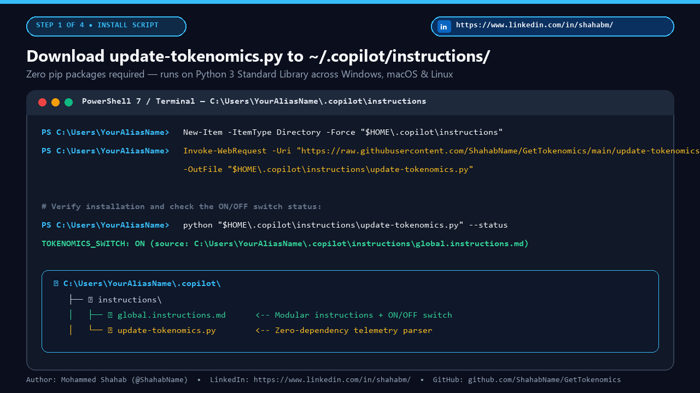
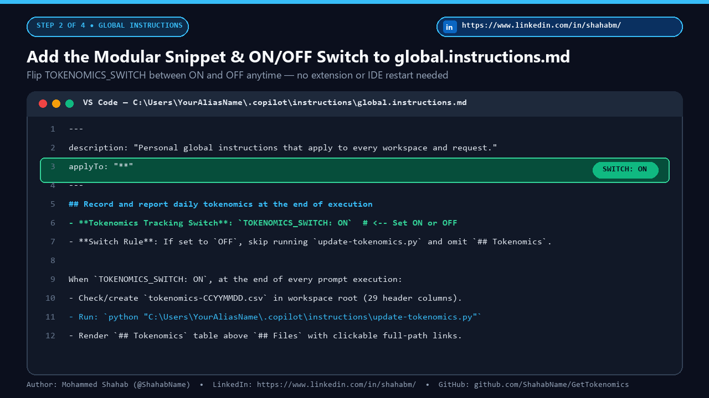
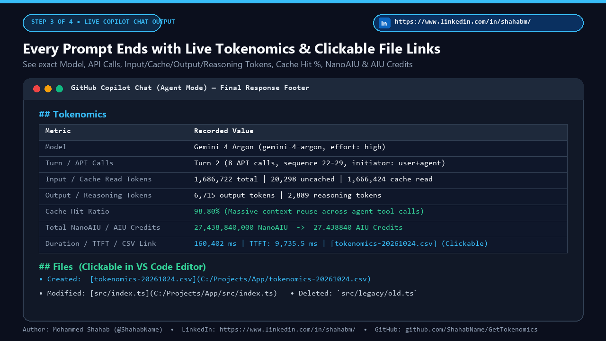
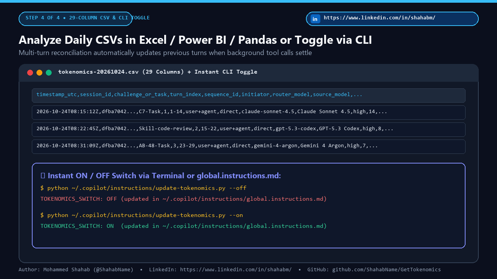

Unlock Full Agentic AI Tokenomics
Inside GitHub Copilot
An accidental discovery turned into a lightweight open-source superpower: drop a single pure-Python script into ~/.copilot/instructions/, add a modular block with an instant TOKENOMICS_SWITCH: ON | OFF toggle to your global.instructions.md, and automatically log 29 telemetry columns on every prompt.
Why Developers & Engineering Leaders Love It
Built using only local files GitHub Copilot already writes to your user directory.
🔒 Zero Enterprise Friction
No VS Code marketplace extension to vet, no third-party telemetry server, no API keys, and no organization admin approval required. 100% local to your machine.
🎛️ Modular ON / OFF Switch
Flip TOKENOMICS_SWITCH: ON or OFF directly inside global.instructions.md or run python update-tokenomics.py --off in 1 second whenever you want quiet responses.
🔄 Multi-Turn Settlement Accuracy
Agentic turns invoke multiple tools before finishing. update-tokenomics.py automatically reconciles previous turns whose final tool-call usage settled after the response rendered.
Interactive Modular Switch Preview
Click the switch below to see how toggling TOKENOMICS_SWITCH changes behavior immediately.
## Record and report daily tokenomics at the end of execution - **Tokenomics Tracking Switch**: `TOKENOMICS_SWITCH: ON` - **Switch Rule**: Checked before execution -> ACTIVE
## Tokenomics | Metric | Value | | Model | Gemini 4 Argon (effort: high) | | Input / Cache Hit | 1,470,171 tokens (98.78% Cache Hit) | | Total AIU Credits | 19.735150 AIU (19,735,150,000 NanoAIU) | | Daily CSV | [tokenomics-20261024.csv](C:/.../csv) |
Step-by-Step Setup Guide (With Screenshots)
Type your Windows / macOS username below to personalize the commands before copying:
Download update-tokenomics.py into your .copilot/instructions folder
Run this one-liner in PowerShell (Windows) or Terminal (macOS/Linux) to save the script in your user directory:
New-Item -ItemType Directory -Force "C:\Users\YourAliasName\.copilot\instructions" | Out-Null Invoke-WebRequest -Uri "https://raw.githubusercontent.com/ShahabName/GetTokenomics/main/update-tokenomics.py" ` -OutFile "C:\Users\YourAliasName\.copilot\instructions\update-tokenomics.py"

Add the Modular Tokenomics Block & ON/OFF Switch to global.instructions.md
Open C:\Users\YourAliasName\.copilot\instructions\global.instructions.md in VS Code and paste the cleaned modular snippet below:
## Record and report daily tokenomics at the end of execution - **Tokenomics Tracking Switch**: `TOKENOMICS_SWITCH: ON` *(Change to `OFF` to disable tokenomics CSV logging and response reporting; change to `ON` to enable)* - **Switch Rule**: Before recording or reporting tokenomics, check `TOKENOMICS_SWITCH` above. If it is set to `OFF`, skip running `update-tokenomics.py`, do not create or modify `tokenomics-CCYYMMDD.csv`, and omit the `## Tokenomics` section from the response. When `TOKENOMICS_SWITCH: ON`, at the end of every prompt or task execution, record the prompt's tokenomics and AIC/AIU consumption in today's daily CSV file in the workspace root (`tokenomics-CCYYMMDD.csv`, where `CCYYMMDD` is the current date in `YYYYMMDD` format, such as `tokenomics-20261024.csv`) and display a summary in the final response. - Check whether `tokenomics-CCYYMMDD.csv` exists in the current workspace root directory with the following 29 header columns: ```csv timestamp_utc,session_id,challenge_or_task,turn_index,sequence_id,initiator,router_model,source_model,model_display_name,reasoning_effort,api_calls_count,user_prompt_multiplier,total_request_multiplier_cost,total_input_tokens,uncached_input_tokens,cache_read_tokens,cache_write_tokens,output_tokens,reasoning_tokens,tool_schema_tokens,cache_hit_ratio_pct,total_nano_aiu,total_aiu_credits,duration_ms,ttft_ms,tools_invoked,finish_reason,ai_credits_status,prompt_summary ``` - If `tokenomics-CCYYMMDD.csv` does not exist yet, create it with the 29 header columns above. - If `tokenomics-CCYYMMDD.csv` already exists, append the latest prompt turn tokenomics data from `C:\Users\YourAliasName\.copilot\session-state\<session-id>\events.jsonl` (and refresh any previous turn in the session whose final tool-call usage settled after the prior turn). You can run `python "C:\Users\YourAliasName\.copilot\instructions\update-tokenomics.py"` to perform this check, creation, and append automatically. - At the end of every prompt response (immediately above `## Files`), include a `## Tokenomics` section showing the tokenomics usage data recorded in `tokenomics-CCYYMMDD.csv` (model, API calls, input/cache/output/reasoning tokens, cache hit %, total NanoAIU, total AIU/AIC credits, duration, and a clickable link to `[tokenomics-CCYYMMDD.csv](C:/full/absolute/path/to/tokenomics-CCYYMMDD.csv)` using its absolute filesystem path with `/` separators).

Run Any Prompt in GitHub Copilot Chat and See Live Tokenomics
Every response now automatically updates today's tokenomics-CCYYMMDD.csv and displays the structured ## Tokenomics summary right above clickable ## Files links:

Toggle ON/OFF Anytime or Analyze Your 29-Column CSV
Use the CLI flags or edit TOKENOMICS_SWITCH: OFF whenever you want to pause tracking:
# Check current status (ON or OFF) python "C:\Users\YourAliasName\.copilot\instructions\update-tokenomics.py" --status # Turn OFF tokenomics tracking python "C:\Users\YourAliasName\.copilot\instructions\update-tokenomics.py" --off # Turn ON tokenomics tracking python "C:\Users\YourAliasName\.copilot\instructions\update-tokenomics.py" --on

Interactive 29-Column Telemetry Schema Explorer
Filter the 29 columns captured in tokenomics-CCYYMMDD.csv by telemetry domain:
| # | Column Name | Category | What It Measures |
|---|